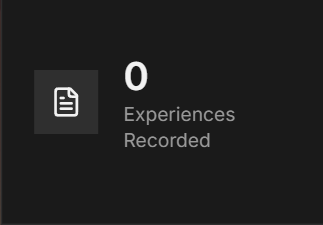
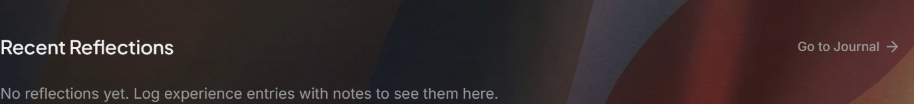

ClinicalHours
01 / 05
01 Impact
Hours alone do not show impact.
If you do not capture the shift while it is fresh, the story gets thinner later.
impact later
Thin memory makes real work sound smaller.



recorded experiences
recent reflections
more than raw hours
ClinicalHours
02 / 05
02 Journal
Write it while it is fresh.
The journal says it clearly: log clinical hours, write reflections, and track your progress.


before later
Capture the detail before it flattens into memory.
log hours
write reflections
track progress
ClinicalHours
03 / 05
03 Record
Keep the clinic tied to the record.
The same profile keeps discovery and logging closer together when you come back later.

same account
Find the clinic, then return to the same place to log the work.

explore opportunities
log hours
featured clinic
ClinicalHours
04 / 05
04 Search
Pull the details back later.
Search logs and scan old entries when memory alone is too thin.
search later
Use search logs and filters instead of guessing what you did.
search logs
filter entries
journal link
ClinicalHours
05 / 05
05 Start
Start the record before apps pile up.
Browse first. Sign in when you want a place to save and log what matters.
student account
Browse first.
Browse first.
Keep the record later.
Use the guest view to explore. Use the account when you want the search and the record in one place.

low pressure
Start with the clinic search. Add the record when you are ready.
browse as guest
sign in later
keep the record ready